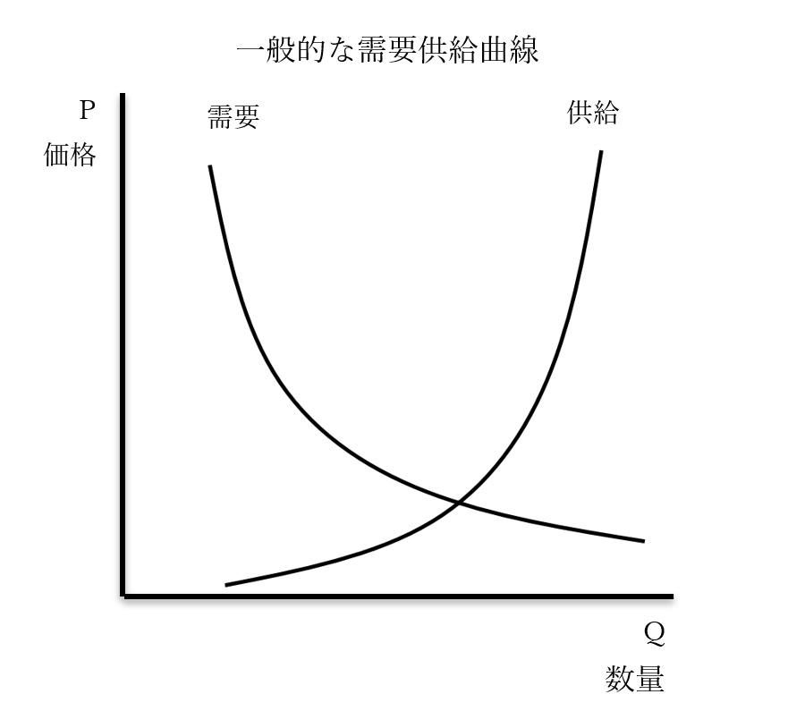
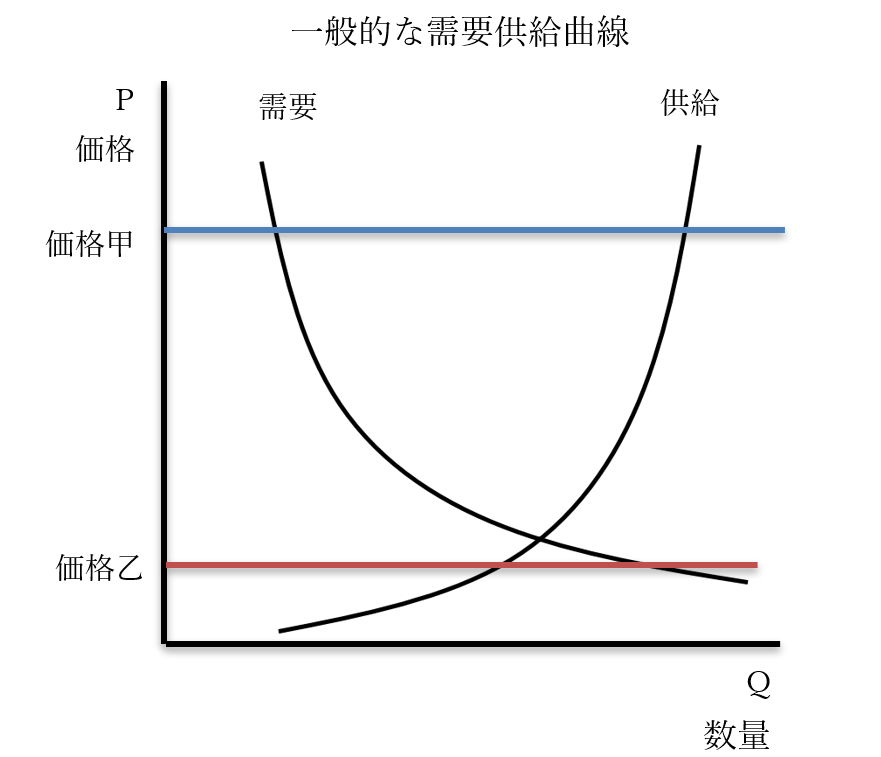
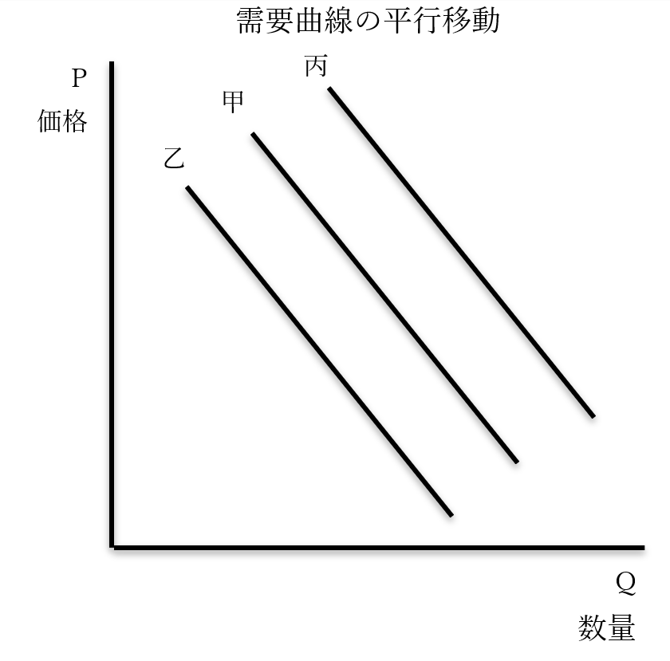
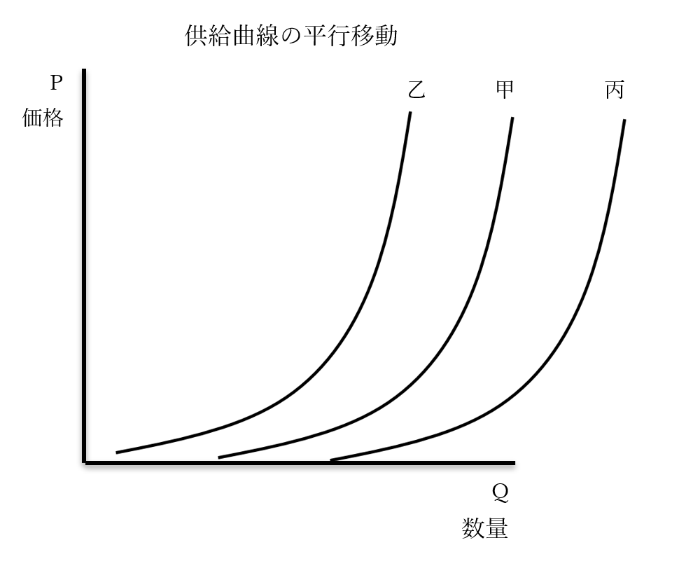
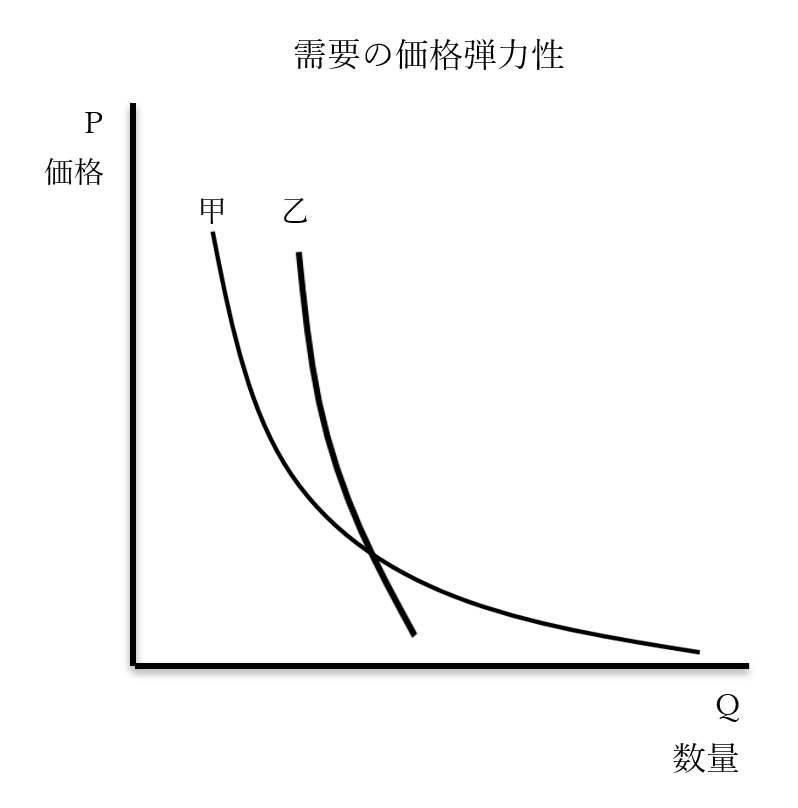
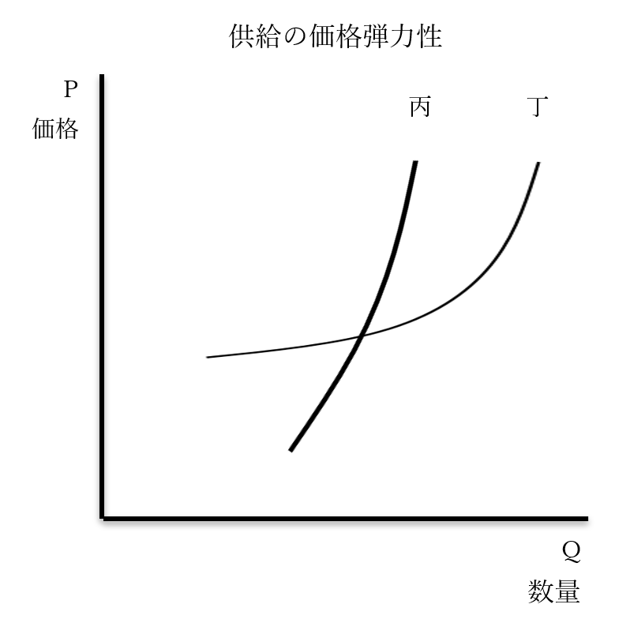

需要供給曲線
経済学は、経済がどうしてこういう風になったのか、という分析と理由付けを行う学問でもある。ただ、分析をするにしても、現実の経済というのは関係する要素があまりにも多い。そこで、［完全競争市場］という理想的な市場をまず想定する場合が多い。理想的な状態なので、当然分析もやりやすい。そこで簡単に分析してから、少しずつ複雑で、現実的な状況の分析へ移っていく訳である。
その分析に使うのが、【需要供給曲線】である。究極的には、経済学とは、この曲線を考察する学問と言える。需要供給曲線をあらゆる状況で完璧に描き、また理解できているのであれば経済学を極めたとすら言ってもいい。本節ではこの需要供給曲線について学ぶ。
●需要供給曲線の概説

・一般的な需要供給曲線では、縦軸を【価格】、横軸を【数量】とする
※価格、数量と書いていなかったり、PriceのP、QuantityのQと書いてあったりする場合が多い。需要と供給に至っては、基本的に全く書いていない
・一般に【右下がり】になっているのが【需要】曲線である
⇒需要とは要するに、「商品を買いたい」という話である。高いモノはあまり買いたくない。安いモノなら買いたいという人が沢山いる。つまり、価格が上がると需要は【減少】し、価格が下がると【増加】する
・一般に【右上がり】になっているのが【供給】曲線である
⇒高いモノはたくさん売りたい（供給したい）。安いモノはあまり売りたくない（供給したくない）。つまり、価格が上がると供給は【増加】し、価格が下がると【減少】する
・需要曲線と供給曲線が一致する点は、理論上最も適切な価格という事になる
・理論上、この価格であれば売れ残りもなく、品切れもない
・こういう価格の事を、【均衡価格】という

・価格甲のように、均衡価格に比べ高過ぎる価格が設定されている場合、【超過供給】が発生する
⇒高いモノはあんまり買いたくないから需要は少ない一方で、高いモノを沢山売りたいからと大量生産が行われ、結果、商品が余る
・超過供給が発生した場合、価格は【下落】する
⇒超過供給が発生した場合、在庫を大量に抱える事になり、安売りする羽目に陥る為
・価格乙のように、均衡価格に比べ安過ぎる価格が設定されている場合、【超過需要】が発生する
⇒安いモノは皆が買いたいから需要は多い一方で、安いモノは売ってもあんまり儲からないからと供給が少なく、結果、商品が足りなくなり「買いたいのに買えない」Nintendo Switch現象が続出する
・超過需要が発生した場合、価格は【上昇】する
⇒超過需要が発生した場合、皆「買いたいのに買えない」状態なので、多少値上げしたところで売れる。高く売った方が儲かる以上、値上げが行われる
・こうして、適正でない価格が設定されていたとしても、最適な価格へ向けて動いていく作用が起こる
⇒【価格の自動調節機能】という
・このように、自由に競争が行われる市場では、意図せずとも最適への動きが起こる
・この現象を、アダム・スミスは「神の見えざる手」と呼んだ訳である
⇒そして、どうせ「神の見えざる手」で何とかなるから、と供給を増やし続けた（拡大再生産）結果が、世界恐慌とも言える。世界恐慌の前、モノがあまり売れなくなってきているのに、神の見えざる手を信じて、また「供給は需要を生み出す」と言って拡大再生産が行われ続け、売れない分は投資家による投資や借金で誤魔化していた。世界恐慌には、それが誤魔化しきれなくなって破綻した、という側面がある
●平行移動

※需要供給曲線は、曲線と言いつつ直線で表現される事も多いのではここでは直線を使用
・何らかの理由で、需要曲線もしくは供給曲線が動く場合がある
・この移動を、平行移動とかシフトとか言う
・需要曲線甲が需要曲線丙に動いた場合、［右上］に平行移動（シフト）した、と表現する
・需要曲線甲が需要曲線乙に動いた場合、［左下］に平行移動（シフト）した、と表現する
⇒見た目上は真横にしか動いてないとかそういう場合も、右上、左下、と表記する
・需要供給曲線で一番難しいのが、この平行移動である
・大抵の高校生がここで詰まる。高校生でなくとも詰まる
・変に難しく考えなくていいのだが、難しく考えて詰まってしまうのである
・では、どう考えればいいか？
・需要曲線というのは、ある特定の条件下で、ある商品について、価格と買われる量を示したものである
・ある特定の時代、ある特定の国で、ある商品を人々が買うとしたらどうなるか…というグラフである
・で、安い商品は買いたい人がいっぱいいるけど、高い商品買いたい人はあんまりいないよね、となる
・じゃあ、その条件が変わったら？
・例えば、その国の景気がよくなって、皆の給料が上がったら？
・同じ価格の商品でも、買う人は増える筈である
・じゃあ、需要曲線は右上に吹っ飛ぶんですか？ 左下に吹っ飛ぶんですか？
・平行移動とは、要はこういう話なのである
・需要曲線が右上に平行移動するのは、以下のような場合である
１：［国民の所得］が［増加］した
⇒国民の財布の中身が増えたから、同じ価格の商品でももっと沢山買うようになった
２：ある商品が［流行］した
⇒流行したから皆が欲しがるようになった。つまり、同じ価格の商品でももっと沢山買うようになった
３：［代替財］の価格が［上がった］
⇒代替財とは、例えばパンに対するお米。例えばお米の値段が上がったとする。朝はご飯派だった人も、「高いから」というのでパン派に鞍替えする。つまり、同じ価格のパンであっても、もっと多くの人が買うようになった
４：［補完財］の価格が［下がった］
⇒補完財とは、例えばパンに対するバター。例えば、バターの価格が下がったとする。朝はご飯派だった人も、バターの価格が下がったから、というのでパン派が増えた。パン派が増えたということはつまり、同じ価格のパンであっても、もっと多くの人が買うようになった、という事である
・需要曲線が左下に移動するのは、右上の逆となる
１：［国民の所得］が［低下］した
２：ある商品の［流行］が終わった
３：［代替財］の価格が［下がった］
４：［補完財］の価格が［上がった］
※基本的には、「同じ価格の商品でも、あまり買えなくなった」ら左下に移動する

・供給曲線甲が供給曲線乙に動いた場合、［左上］に平行移動（シフト）した、と表現する
・供給曲線甲が供給曲線丙に動いた場合、［右下］に平行移動（シフト）した、と表現する
⇒見た目上は真横にしか動いてないとかそういう場合も、左上、右下、と表記する
・供給曲線の平行移動も、需要曲線と同じように考えればいい
・供給曲線というのは、ある特定の条件下で、ある商品について、価格と生産量を示したものである
・ある特定の時代、ある特定の国で、企業がある商品を生産するとしたらどうなるか…というグラフである
・で、安い商品はあんまり儲からないからあんまり作らない。高い商品は儲かるから沢山作る、と
・じゃあ、その条件が変わったら？
・例えば、その商品の原料が値上がりしたら？
・商品を同じ量作るにしても、価格は上がる筈である
・じゃあ、供給曲線は左上に吹っ飛ぶんですか？ 右下に吹っ飛ぶんですか？
・こういう話である
・供給曲線が左上に平行移動するのは、以下のような場合である
１：［原材料］が［値上がり］した
⇒原材料が値上がりすれば、同じ量を作るにしても価格は上がる
２：［賃金］が［上がった］
⇒［賃金］が上がれば、人件費の分値上げせねばならない。同じ量を作るにしても価格は上がる
３：税（消費税、法人税等）が［引き上げ］られた
⇒増税されたら、当然、その分値上げする事になる。となれば、同じ量を作るにしても価格は上がる
・供給曲線が右下に平行移動するのは、以下のような場合である
※同じ量を作るにしても、価格は下がる…という話になると、右下に平行移動する。基本的には左上への平行移動の逆だと覚えておけばいいが、一つ、要因が追加される
１：［原材料］が［値下がり］した
２：［賃金］が［下がる］
３：［税］（消費税、法人税等）が［引き下げ］られた
４：［イノベーション（技術革新）］が起きた
⇒イノベーションによって、安く大量生産できるようになった。つまり、同じ量を作るにしても価格は下がる事になり、右下に平行移動する
・よく言う「不況時に増税するとか経済死ぬぞ」も、この平行移動で説明できる
・不況時はモノが売れなくて（買えなくて）皆困っている
・なのに増税して値段が上がったらモノが余計売れなく（買えなく）なるんですよ、という
⇒地震とかで不況なのに「復興増税」とか言って増税（特に消費税・法人税）するとヤバい、という話
・ただ気を付けておいてほしいのは、以上の話はあくまで理論上の話、という事
・現実に必ずこうなるとは限らない
・例えば、賃金が下がったからと言って値段も下がるとは限らない
⇒賃金を下げて値段はそのままにして、増えた利益は経営陣と株主で山分け…というのは、特に1980年代の新自由主義の台頭以降、世界中で繰り返されてきた光景である。そのせいで、「国民所得が下がったから需要が縮小」「でも賃金が下がったから値段が下がる、は起きない」となり、世界中で経済が縮小した。これは日本でも、米国でもそう
～ここから雑談～
・経済学では、基本的に「あらゆる存在は経済的に合理的である」という前提で研究される事が多い
・例えば消費者は、同じ品質の商品があれば、１円でも安い方を必ず買う、という風に考える
・ただ実際には、「この会社が好きだから」というような理由で高い方を買う場合もある訳で…
⇒経済学が現実離れしているとか、予想を的中させるのが下手糞と言われるのはこの辺が理由の一つ
・まぁ実際、ここ数十年、経済学者の言う通りやればやるほど労働者の待遇は悪くなり、貧富の格差は拡大し、経済は縮小し…となってしまっている訳で、未来を考えるという意味では、近年の経済学は正直、アレである
・「これは、これこれこういう理由で起こった」と理由付けするのは得意なのだが…
～ここまで雑談～
●価格弾力性
・需要曲線や供給曲線は、どんな商品でも同じ曲線を描く訳ではない
・モノによって線が緩やかだったり急だったりする
・この勾配を表現する時使う単語が［価格弾力性］
・曲線が緩やかであれば、価格弾力性が［大きい］
・曲線が急であれば、価格弾力性が［小さい］

・甲のように需要曲線の緩やかな商品は、［需要の価格弾力性］が［大きい］と言える
⇒贅沢品のような、なくても困らないもの。また、他の商品で代替できるものは、価格がちょっと上がっただけで一気に誰も買わなくなるので、こうなる
・乙のように需要曲線の急な商品は、［需要の価格弾力性］が［小さい］と言える
⇒生活必需品や、他の商品で代替できないものは、価格が上がっても買わざるを得ないので、こうなる

・丙のように供給曲線の急な商品は、［供給の価格弾力性］が［小さい］と言える
⇒農作物は大抵の場合、増産しようとしても、そう思ってから一年かかる（作物が実るのに一年かかる）。このように、急に供給を増やせない場合は、価格弾力性が小さくなる
・丁のように供給曲線の緩やかな商品は、［供給の価格弾力性］が［大きい］と言える
⇒工業製品は、やろうと思えば工場を二十四時間動かすとかで緊急増産ができなくはない。少なくとも農作物よりは、一気に供給を増やせる。こういう場合は、価格弾力性が大きくなる
～おまけの雑談～
ところで、令和三年現在、転売行為がよく問題になっている。代表例はニンテンドースイッチという商品で、いつまで経っても品薄で、転売屋が買い占め、高額で転売するのが問題になっている。転売する奴が糞というのはまぁ横に置いておくとして、何故このような事が起こるのか？ これは、実は、需要用供給曲線を使って説明できる。需要供給曲線の総まとめとして、考えてみよう。
品薄が起きるのは「需要過剰」「供給過少」の時である。こういう時は、供給を増やす（生産量を増やす）か、値段を上げる（値段が上がると需要が減るので品薄も解消される）のいずれかである。
しかし、スイッチの製造業者、つまり任天堂は、なかなか供給を増やさない（生産量を増やさない）。また、希望小売価格も上げない。しかし、需要は過剰であり、需要過剰という事はつまり、もっと高い値段でも買う人はいるという話である。だからこそ転売屋が出てくるのだ。しかし任天堂は、供給を増やしはしないし、値段（希望小売価格）を上げる事もない。
一応、任天堂が何もしなくても、それでもスイッチの転売をできなくする手はもう一つある。要は、希望小売価格は希望小売価格に過ぎないので、小売店が値段を上げればいいのである。値段を上げれば需要が減少し、品薄は解消される。まさに、経済学的に正しいやり方である。
じゃあ何で小売店はそうしないのか。
消費者に叩かれるからである。
もっと言えば、日本人が社会科をちゃんと勉強してないからである。
小売店が勝手にスイッチを値上げすれば、間違いなく、人々は小売店を叩くだろう。守銭奴と言って叩き、SNSで炎上させるだろう。しかし、元はと言えば任天堂が「需要過剰」「供給過少」を放置しているからこうなっている訳である。製造元が値上げもしない、生産数も増やさないなら、小売店が値上げをするしかない…というのは、ちゃんと社会科を勉強していれば分かる事なのだが、皆社会科が嫌いなのでよく分かってないのである。
そしてスイッチは転売屋に買い占められ、高額で転売される。
ちなみにこれを放置するとどうなるかと言うと…「需要と供給を人為的に弄れば、儲かる」と思いつく者が出てくる。例えば、「「需要過剰」「供給過少」ではない商品であっても、買い占めてしまえは「供給過少」になり、「需要過剰」にもなり、結果として値上がりする」という事をやろうとする者が出てくる。ある程度安定して需要のある商品を買い占めて、人工的に「需要過剰」「供給過少」の状態を作り出し、値段を吊り上げて儲けようとする訳である。令和三年現在、ホビー商品（分かりやすく言えばガンダムのプラモデルとか）等々で実際に起きている事である。
こういう、需要と供給を人為的に弄って儲ける、というのは株とか通貨の取引の世界では当然の商取引として横行している行為ではある。後々国際経済史でやる、アジア通貨危機なんかはまさにそれである。そういう点も含めて、「健全で公正な商取引とは何か」というのは、一度立ち止まって考えてみるのもいいだろう。
～ここまで雑談～